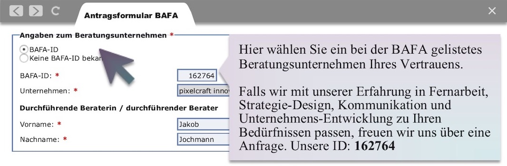

Für kurze Zeit hat das Bundesamt für Wirtschaft und Ausfuhrkontrolle (BAFA) eine besondere Förderung für Beratung zur Corona-Krise eingerichtet. Unternehmen, die durch die Krise in wirtschaftliche Schwierigkeiten geraten sind, können sich eine Beratung ohne Vorfinanzierung zu 100% fördern lassen. Die Antragsstellung ist obendrein vereinfacht. Die häufigsten Fragen zum Ausfüllen des Antrags haben wir hier in einem kommentierten Beispiel des Antrags-Formulares aufgegriffen.
direkt zur Ausfüll-Anleitung springen
Einige Unternehmen und auch Selbständige sind in der Pandemie mit dramatischen Umbrüchen konfrontiert. Wie sie darauf reagieren sollen, dazu haben sie viele Fragen, aber wenig Zeit und immer weniger Mittel. Das BAFA möchte schnell und für die üblichen Verhältnisse von Fördermittel-Vergabe mit sehr wenig bürokratischem Aufwand Beratung für die Betroffenen ermöglichen.
Dazu gibt es für begrenzte Zeit eine spezielle Form der Beratung zu “Unternehmerischem Know-How”. Diese Beratung richtet sich an Selbständige und kleine Unternehmen. Bis zu 4.000€ Beratungshonorar übernimmt das Bundesamt ausnahmsweise vollständig und ohne Vorfinanzierung. Die Informations-Seite zur Förderung fasst alle wichtigen Informationen zusammen:
Zur BAFA-Informations-Seite: Die modifizierte Richtlinie zur Förderung unternehmerischen Know-hows.
Die Antragsstellung für diese Sonderförderung beschränkt sich auf ein Online-Formular und ein Dokument, in dem Sie Ihren Fall erklären.
Damit die Antragsstellung noch einfacher geht, haben wir die Fragen, die uns bei der Begleitung vergangener Projekte trotz der amtlichen Dokumentation immer wieder begegneten, hier einmal anhand des Formulars selbst veranschaulicht.
Zur Antragsstellung müssen Sie eine Begründung anfügen: Wie und warum die Corona-Krise Ihr Unternehmen in wirtschaftlichen Schwierigkeiten bringt. Diese Begründung sollte plausibel und anschaulich formuliert sein. Natürlich muss sie auch wahrheitsgemäß sein und einer Überprüfung Stand halten.
Denken Sie daran: Die Sachbearbeiterinnen und Sachbearbeiter wollen Ihnen helfen und haben viel Verständnis für mangelnde Erfahrung im Antragswesen. So lange Sie sich verständlich machen und Ihr Anliegen nachvollziehbar argumentieren, wird die Bürokratie Ihnen mit Nachsicht begegnen.
Das Unternehmen . . . . . . . . . ist von der Corona-Krise vor wirtschaftliche Schwierigkeiten gestellt:
Der Geschäftszweck des Unternehmens ist . . . . . . . . . , dabei erfüllen wir unsere Leistungsangebote, in dem wir . . . . . . . . .
Wir sind dementsprechend von der Corona-Krise betroffen, weil wir . . . . . . . . .
Auswirkungen auf unsere Umsätze und Auftragslage schätzen wir für die nächsten Monate auf . . . . . . . . . und erste Erfahrungen zeigen, dass wir bereits jetzt . . . . . . . . .
Dementsprechend müssen wir schnell strategische Anpassungen vornehmen und möchten über eine Beratung spezialisiertes Wissen erwerben.
Ort . . . . . , Datum . . . . . , Name . . . . .
Speichern Sie ein entsprechend formuliertes Dokument unter dem Namen “Corona betroffen” für die spätere Verwendung ab.
Sie finden das Antragsformular online bei der BAFA.

Sie können erst starten, wenn Sie anklicken, dass Sie mit den Datenschutz-Bestimmungen einverstanden sind. Wenn Sie anklicken, dass Sie von der Corona-Krise betroffen sind, passt sich das Formular dementsprechend an.

Sie geben an, ob Ihr Unternehmen noch jung ist oder schon seit mehr als zwei Jahren am Markt etabliert.

Die Leitstelle können Sie sich frei aussuchen.
Wenn Sie ein Beratungsunternehmen gefunden haben, dass für Sie passt, tragen Sie deren BAFA-ID ein. Der Name des Beratungsunternehmens wird dann automatisch vervollständigt. Eine BAFA-ID haben Beratungen, die für das Programm zur Förderung unternehmerischen Know-Hows gelistet sind. Unsere ist die 162764. Tragen Sie auch den Namen der Person ein, die Ihre Beratung federführend durchführen soll.

Die Unternehmens-Klassifikation ist eine vierstellige Nummer. Das statistische Bundesamt sortiert alle Unternehmen in Kategorien ein. Die Haupt-Kategorien finden Sie in einem Dokument bei der BAFA: zum Download der Kurzanleitung (PDF) Wenn Sie die für Sie passende Ober-Kategorie und damit die ersten beiden Ziffern Ihrer Nummer gefunden haben, hilft Ihnen die Auto-Vervollständigung des Antrags-Formulars weiter.

Sie müssen nun noch ein paar Aussagen bestätigen. Die Förderung ist nicht für Unternehmen gedacht, die mehr als 50 Mitarbeitende beschäftigen und entsprechende Umsätze erwirtschaften.
Sie dürfen nicht die geförderte Beratung in Anspruch nehmen und dann selbst zum gleichen Thema Beratung anbieten. Wenn Sie allgemeine Unternehmensberatung anbieten, müssen Sie erklären können, wo Ihnen trotzdem unternehmerisches Know-How fehlt. Hier entscheiden die Sachbearbeiterinnen und Sachbearbeiter, ob in der aktuellen Ausnahme-Situation ein Fall trotzdem passt.

Schon fertig. Nach dem Klick werden Sie zum Portal weiter geleitet, wo Sie Ihre Erklärung zum Status als betroffenes Unternehmen hoch laden müssen.
Gemeinsam schaffen wir das. Wir stehen für Rückfragen und professionelle Unterstützung in der schwierigen Zeit gern zur Verfügung. Wir finden schon eine Lösung, auch für besondere Bedürfnisse zu Umsetzung und Bezahlung.
Kontakt: jakob [at] pixelcraft.pub
Bleiben Sie optimistisch, bleiben Sie pragmatisch, bleiben Sie solidarisch!